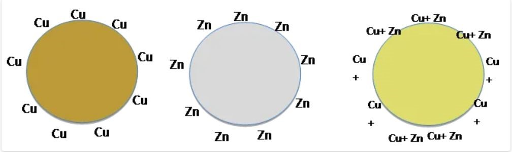
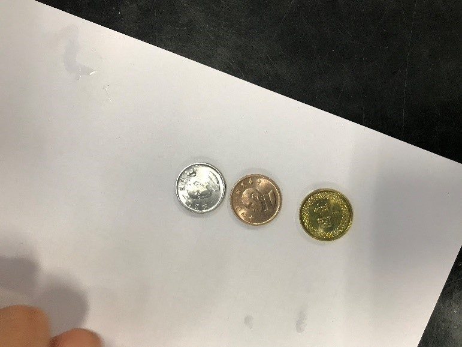
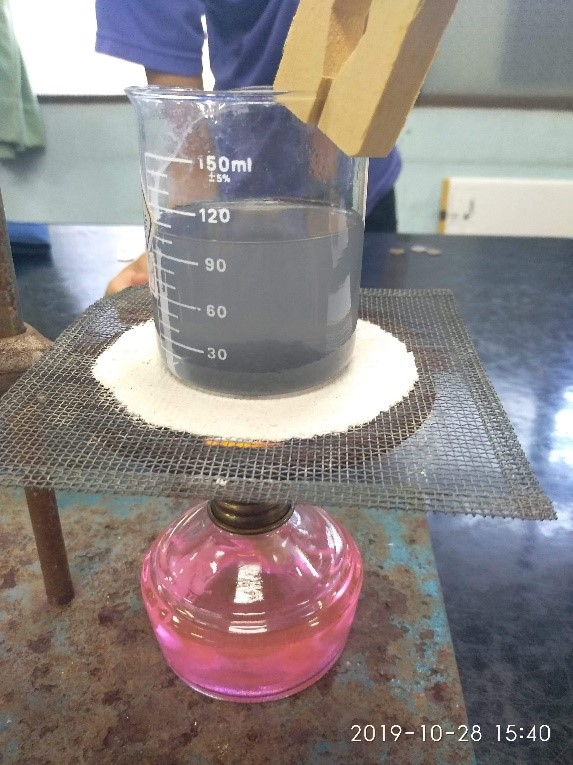

硬幣實驗
實驗器材:
1.3枚硬幣 2.燒杯
3.氫氧化鈉 4.酒精燈
5.陶瓷纖維網
實驗內容:
1.先配置6M的氫氧化鈉水溶液共100ml，需要秤24g的氫氧化鈉固體，並另外秤4g重的鋅粉，一併加入燒杯
中加熱。將欲鍍的一塊錢也放置在溶液中，價熱到冒煙為止。
2.加熱完後將硬幣取出，並用清水清洗，可得銀白色的硬幣，此為鋅離子在溶液中解離並附著在應併上而形
成銀白色。將銀幣擦乾經過火烤之後，可發現顏色漸漸由銀白色轉換為金色，是因為鋅與銅慢慢混和成了
鋅銅合金，因此才會有金的顏色。若是將鍍金的硬幣再繼續火烤，則可以發現會慢慢還原成原來的銅。

實驗心得:
藉由這次的實驗，讓我們更了解了氧化還原反應的機制，而且實驗器具也不算不容易取得，也能在過
程中理解其實驗的原理，很適合在家中自己做。實驗過中會散發出銀的臭味，若不甚吸入過量，可能會使
身體受到危害，需要特別小心。
圖片:

